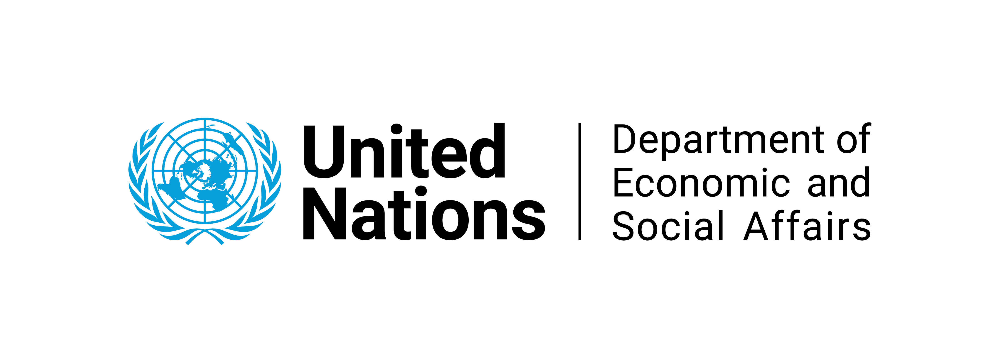
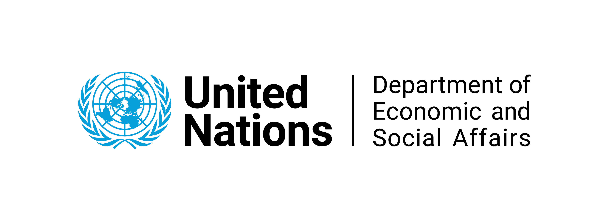

|  |  |
La aplicación “ARIES for SEEA” pone el estándar de Contabilidad de Ecosistemas de SEEA al alcance de cualquier usuario. La herramienta elige las fuentes de datos y métodos contables en función del contexto geográfico y temporal seleccionado por el usuario en cualquier parte del mundo. La inteligencia artificial, basada en la tecnología k.LAB se utiliza para seleccionar los métodos y datos más adecuados. La aplicación “ARIES for SEEA” está en constante crecimiento reflejando, así, las últimas innovaciones en la Contabilidad de Ecosistemas, los datos más recientes y los comentarios de la comunidad global de SEEA.
“ARIES for SEEA” es un componente del ecosistema de Inteligencia artificial para el medio ambiente y la sostenibilidad ARIES (ARtificial Intelligence for Environment and Sustainability) ): una plataforma de modelización integrada de código abierto para la sostenibilidad ambiental, donde investigadores de todo el mundo pueden agregar sus propios datos y modelos a repositorios basados en la web. La plataforma ARIES ofrece un alojamiento coherente de datos y modelos, convenciones de nomenclatura y reglas de garantía de calidad, lo que asegura que estos datos y modelos sean fáciles de encontrar, accesibles, interoperables y reutilizables para cualquier persona.
TLa aplicación se encuentra en estado beta inicial: todas las funcionalidades han sido testadas con éxito, aunque es posible que siga habiendo algún problema. Muchas funcionalidades se irán mejorando y ampliando en el futuro.
“ARIES for SEEA” se actualizará continuamente proporcionando, así, una mayor estabilidad del software y nuevas funcionalidades en el futuro. Tu opinión nos ayuda a mejorar. Si tienes cualquier sugerencia o comentario, te animamos a que contactes con nuestro servicio de soporte. ¡Gracias!
La aplicación ha sido financiada por la Unión Europea como parte del proyecto Contabilidad del capital natural y valoración de los servicios de los ecosistemas (NCAVES, por sus siglas en inglés). Su desarrollo ha sido posible gracias a la colaboración de los equipos de UN DESA, PNUMA, BC3 y el Servicio Geológico de los Estados Unidos (USGS, por sus siglas en inglés), junto con muchos otros colaboradores que han contribuido mediante la aportación de datos y modelos. Los principales colaboradores son:
Un agradecimiento especial para Sean Lovell (Plataforma global de Naciones Unidas), Maria José Sanz (BC3, Ikerbasque), Alba Marquez (BC3), Andrea Antonello (BC3/HydroloGIS), Angel Gimenez (BC3), Yuwei Wu (BC3), Jessica Ying Chan (UN DESA), Joachim Maes (JRC), Fernando Santos (URJC) y la comunidad global de SEEA.
|  | |